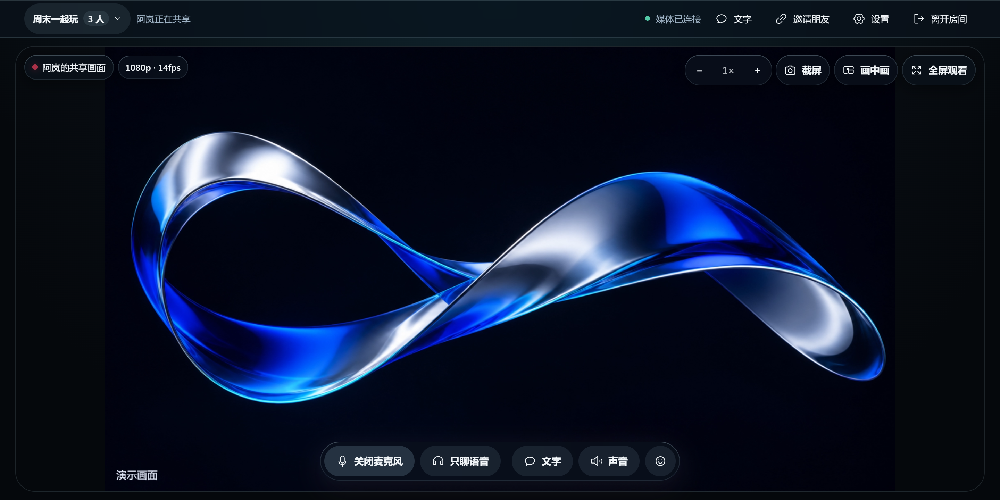

实时传输引擎
同一份编码，两份清晰。
只编码一次，再把画面分别发给两位观众。
1080p60单次编码 · 8 Mbps 目标
LAN DIRECT · 波形演示
v1.0.0 正式版 · 局域网屏幕共享
无需云端中转，打开即用。一个人分享，最多三人同场，在自己的局域网里边看边聊。默认画质目标为 1080p60。
Windows x64 单 EXE · 桌面版 Edge / Chrome
为亲近的连接而设计
不走公网，无需账号。
你的屏幕、声音与文字，
产品体验
共享整个显示器，按需带上系统声音。停下共享后，语音和文字仍可继续。



实时传输引擎
只编码一次，再把画面分别发给两位观众。
私有 IPv4 直连
不经云端，无需账号。请在你信任的网络里使用。
附近房间
保留画面细节
拖动滑块或使用方向键对照。右侧为模拟的公网压缩效果，不是实测。
同一个房间
单次编码
v1.0.0 将同一份编码画面发给两位观众，保留所选分辨率、帧率和码率目标。
同一份编码画面
编码一次。分享者的本机程序把同一份画面分别发给两位观众。
回到浏览器即恢复预览。采集、发送和朋友看到的画面继续。
语音时跳过视频统计。观看画面时，展开诊断即可查看实际尺寸、帧率和编码信息。
交互模拟 · 不采集屏幕
开始模拟共享，再移动光标或点击房主画面，看看观看端如何跟随。这个演示不会连接任何设备。
画质预设
192.168.1.20:45678房间码 ABCD2345局域网直连
画面、声音和文字在成员的设备之间传输，无需云端中转或注册账号。请在你信任、且电脑能互相访问的私有 IPv4 局域网使用。
| 发布版本 | v1.0.0 正式版。请让所有成员使用同一版本。 |
|---|---|
| 系统与浏览器 | Windows x64 单 EXE · 桌面版 Microsoft Edge 或 Google Chrome |
| 房间人数 | 最多三人。一次由一位成员共享，最多两位成员观看。 |
| 视频画质目标 | 默认 1080p60，码率上限 8 Mbps。另可选 720p60 或 720p30。1 |
| 观看工具 | 实收画质、局部放大、全屏、原尺寸 PNG 截图。画中画取决于浏览器支持。 |
| 声音与文字 | 选麦试音、自由麦、按键说话、独立音量和带链接的房间文字。系统声音由浏览器和采集授权决定。 |
| 网络与本机偏好 | 可互通的私有 IPv4 局域网，使用 WebRTC，优先推荐实际局域网网卡。昵称、头像颜色等偏好保存在本机。 |
| 开源许可 | Apache-2.0。发布包附带 NOTICE 署名和第三方组件许可。 |
完整解压同一版本的 Windows 发布包。双击 EXE，在 Edge 或 Chrome 里打开页面。
一人创建房间。朋友从附近房间加入，也可粘贴完整邀请信息。
点击共享屏幕，选择整个显示器。根据需要授权系统声音和麦克风。
每位成员都需运行 Windows x64 版本，使用桌面版 Edge 或 Chrome。电脑须处于能够互相访问的私有 IPv4 局域网。
请大家退出旧程序，统一运行 v1.0.0，再重新创建房间。旧版与正式版混用会遇到协议兼容问题。
停止共享会保留语音和房间。短暂断线时，程序会在 30 秒保留期内尝试恢复。刷新后，麦克风和屏幕需重新开启。房主退出或超过保留期，房间结束。
昵称、头像颜色、选用的网卡和麦克风等偏好保存在本机。启用麦克风或共享时，仍由你操作并通过浏览器授权。
电脑能在同一个局域网互相访问，就可以在无互联网时开房、看屏、开麦和聊天。下载程序以及点击聊天中的外部网页链接，需要相应的互联网连接。
使用原生 WebRTC 和合成媒体检查三人传输、实际编解码尺寸与帧率、停止共享和刷新恢复。真实游戏帧时间、三台实体设备和不同网络条件仍需实测。
阅读完整验证范围